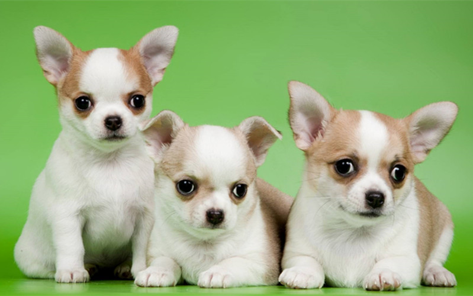
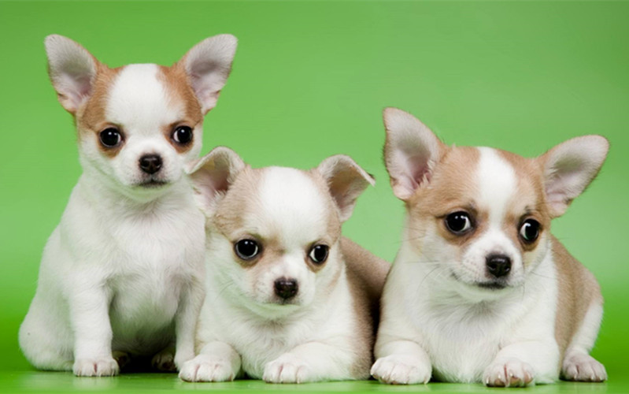

吉娃娃/h2>

特徵
吉娃娃犬以細小的體型、大眼睛、特別大的耳朵和直豎的尾巴為特徵。美國犬業俱樂部僅承認一種吉娃娃犬，但其實此犬種有許多型態、花色和長短毛之分。以長短毛來分，可分為短毛與長毛，短毛是我們目前較常見的，而長毛吉娃娃身上的毛光澤且柔軟，後肢肌肉較發達。生性懦弱且對冷很敏感，喜歡熱，愛曬太陽。長毛種耳朵、四肢、尾巴皆有裝飾毛，但長度並未拖地，在花色方面，墨西哥地區以前以黑色品種居多，不過現在毛色已呈多樣化，包括奶油色、紅色、褐色、黑色中摻有黃褐色、各種混色。另外牠們的重量介於1至5公斤之間，美國犬業俱樂部不認可超過3公斤的吉娃娃犬。
性格
吉娃娃的性格極為神經質，絕大多數的吉娃娃喜歡到處吠叫，這也是吉娃娃之所以為人詬病的其中一點。由於牠們的體型很細小，身體十分瘦弱，所以極容易受到傷害。牠們細小的體型也為牠們帶來好處：因為牠們體型細小，使牠們能輕易適應現代的生活環境，包括市區和小公寓，適合老年人飼養。一般來說，小心飼養的話，吉娃娃犬都可以有長達17年及以上的壽命。
歷史
目前，有關吉娃娃犬的起源問題所記載的資料很少。其中有一說法認為吉娃娃犬的祖先可能與9世紀時統治今日墨西哥周邊地區的阿茲提克文明有關。他們的皇室飼養著一種被稱為Techichi的犬種，這種犬種和吉娃娃很類似，但體型較大。現在的吉娃娃犬只是一種寵物，但在當時卻有著宗教的存在意義，很多時候成為了死者的殉葬寵物。吉娃娃犬被認為是北美最古老的犬種。今時今日的吉娃娃犬，是於19世紀由美國引入墨西哥當地的原種犬，再與其他犬種混合交配而成的，一開始只有短毛型的品種，之後藉由與蝴蝶犬之類的犬種配種，誕生出長毛型吉娃娃。
飼養注意事項
吉娃娃犬比其他犬類嬌貴，在出生時和牙齒方面需要專業獸醫的特別照顧，牠們也經常受一些神經類遺傳疾病所苦，如癲癇，還有膝關節脫臼的問題，部分進入老年容易有心臟與支氣管疾病，季節交替日夜溫差大時，易出現休克。廣為人知的還有牠們的頭顱骨留有囟門，簡單來說是頭蓋骨密合不全，在吉娃娃的頭頂上會留有一個小孔。健康的吉娃娃的眼珠圓亮飽滿、不混濁。
